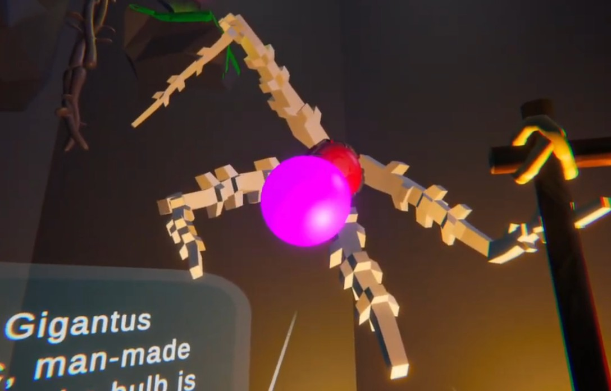
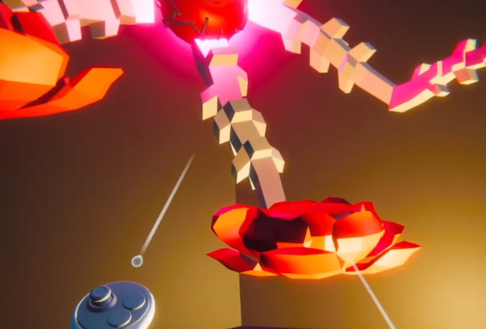
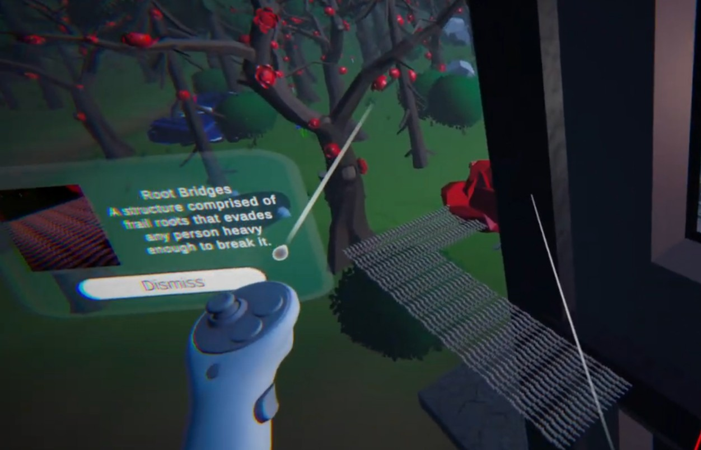
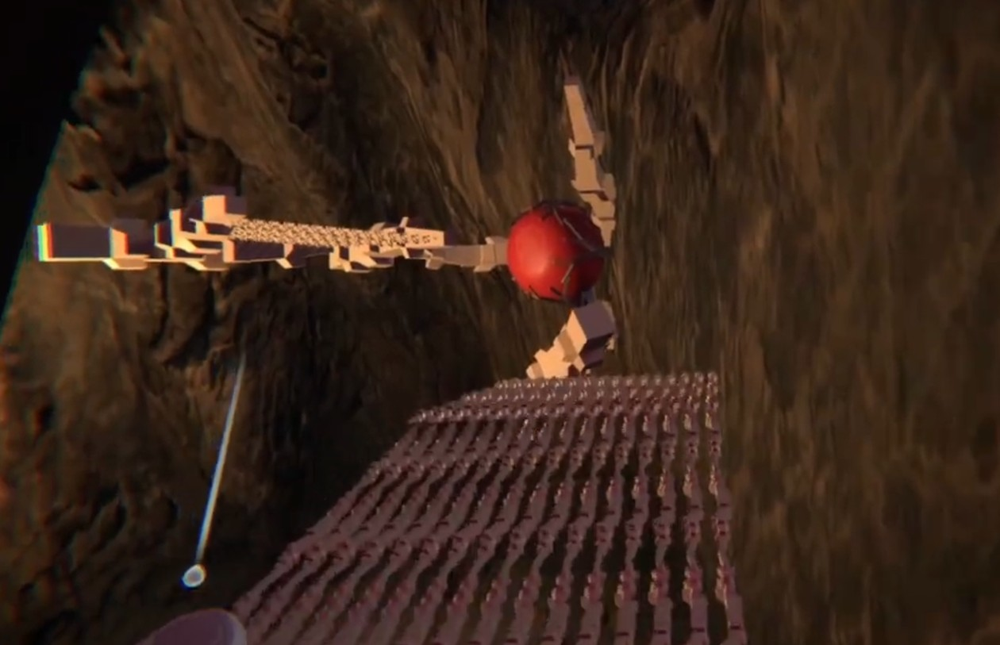
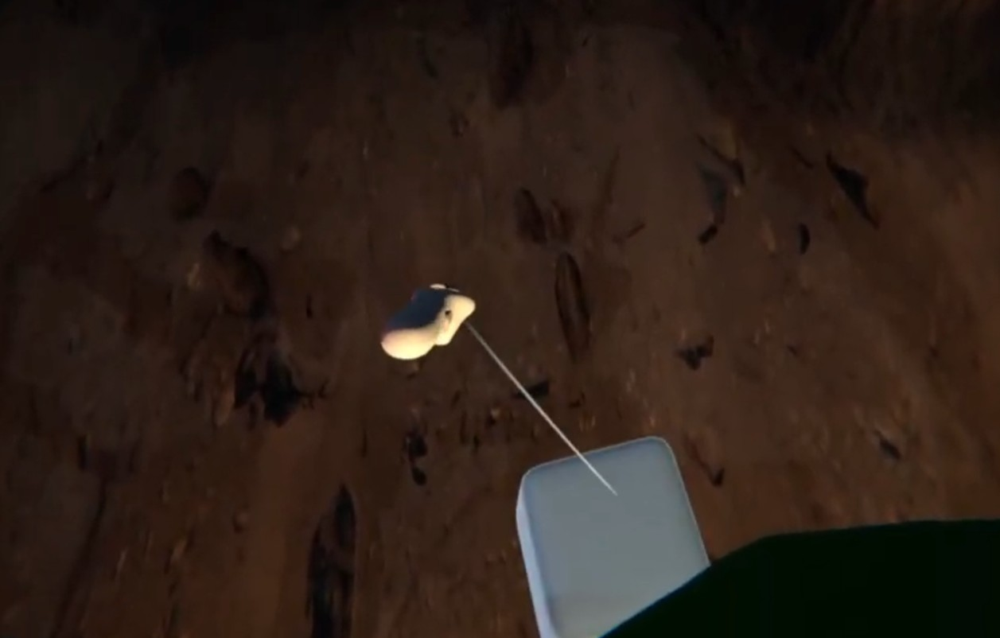
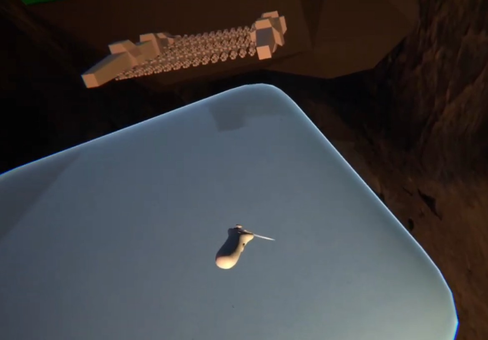

Lysenthera

This game was a 3D VR action-adventure/platformer/puzzle game made in a Virtual Reality development course, and it was the first time I’ve worked in VR. It was the most demanding project so far in my program, as I was the group’s only programmer.
Jump to Sections
My role and contributions
Role: Gameplay Programmer / Designer
Tools: Unity, C#, Github
Team: Ash, Jessica, Jae and I
Project span: September - December 2025
I implemented core gameplay systems including player movement, VR interactions, and some object behaviors, focusing on responsive controls and readable feedback.
I collaborated closely with designers to prototype new mechanics, iterating quickly on level flow and encounter pacing based on playtest data.
I maintained technical documentation and supported the team with tooling improvements, such as debugging utilities.
What is Lysenthera?
An immersive VR survival-mystery game where players step into the shoes of a stranded scientist cut off from their team after a mysterious expedition incident. Trapped in an uncharted, mutated forest with broken communications and blocked exits, you must navigate an unnatural ecosystem to survive. By exploring a silent, abandoned laboratory hidden deep within the infection, players uncover dark experimental secrets and must find a cure for the forest's mutation to secure their escape.
The scientist wakes up surrounded by ancient plants and fungi, which they have read about but have not seen in front of their eyes. I implemented all of the player's interactions, such as picking up objects and shooting far away objects. Changing from Unity's default keyboard controls to VR headgear and controllers was achieved through utilising Unity's Oculus XR library. To narrow the information gap between the player and the protaganist, I implemented tooltip UI that informs the player of their controls, as well as how each plant can be interacted with. Using tooltip UI as opposed to a menu allowed me to offer a more immersive gameplay experience.


One aspect of the game that was complicated code-wise was the root and bulb system. Throughout the game’s world, bulbs are rooted into the dirt. When they are shot, they vary in their response; some temporarily sprout platforms, grow vines the player can climb, or retract walls of roots. The player progresses by shooting these bulbs, that allow them to progress further through the game. In each land, there is an invisible object that facilitates communication between these related elements, detecting when one of the bulbs are shot and then triggering the right response.
The process of adapting to VR
On the whole, we encountered many issues where the game, which was partially inspired by first-person computer games, did not transfer well into VR, which presented some of this project's biggest challenges.
Navigating disconnect between touch and sight


For instance, we found that moving heavy objects (like a teammate's design for pushable boulders) felt unnatural and disorienting as a result of the disconnect between what they are feeling and what they are seeing. I pivoted the design toward VR-native interactions by replacing the features that do not cause that disconnect with new objects that feel more natural.
To be able to remove the pushable boulders and also expand on the scaling mechanic which is central to this game, I created a scalable box. It can be picked up using raycasting when it is small, but be used as a platform when it is large.
Navigating the cybersickness related to player scaling


A related issue that we found during playtesting is that scaling the player to be taller in virtual reality can be disorienting because they suddenly lose their familiar real-world sense of scale, making the virtual floor feel like it is dropping away beneath them and causing a mismatch between their physical height and their visual perspective.
Many of our playtesters would continue playing at a taller height even if they didn’t need to, but would report that over the course of their playthroughs they started feeling queasy, sometimes quitting. To rectify this, I created an object called the root bridge, which is a platform that can only be walked on if the player is at a very short height. When a player is small, their camera is close to the ground, the player's perspective is stabilized, locking their eyes onto a single, stable path. Using these were my way of getting players to shrink down. Subsequent playtests I conducted did not have as many reports of cybersickness.
Aftermath
The game was well-received by playtesters and the teaching team. I still think that there are a lot of improvements needed to be done to minimize cybersickness, but I felt content overall with how the project turned out. Having very little experience with virtual reality prior to working on this project, I was not sure what to expect, but walking out of the experience, I have become better at adapting to unfamiliar game development tools and programming languages. Furthermore, I have felt significantly improved at facilitating playtests and designing solutions to the issues that present themselves.